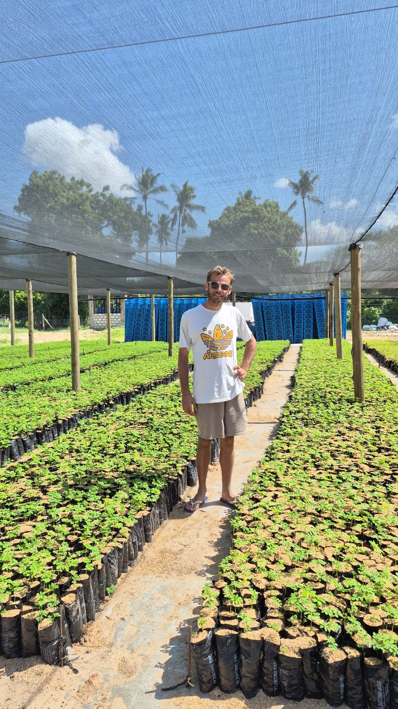
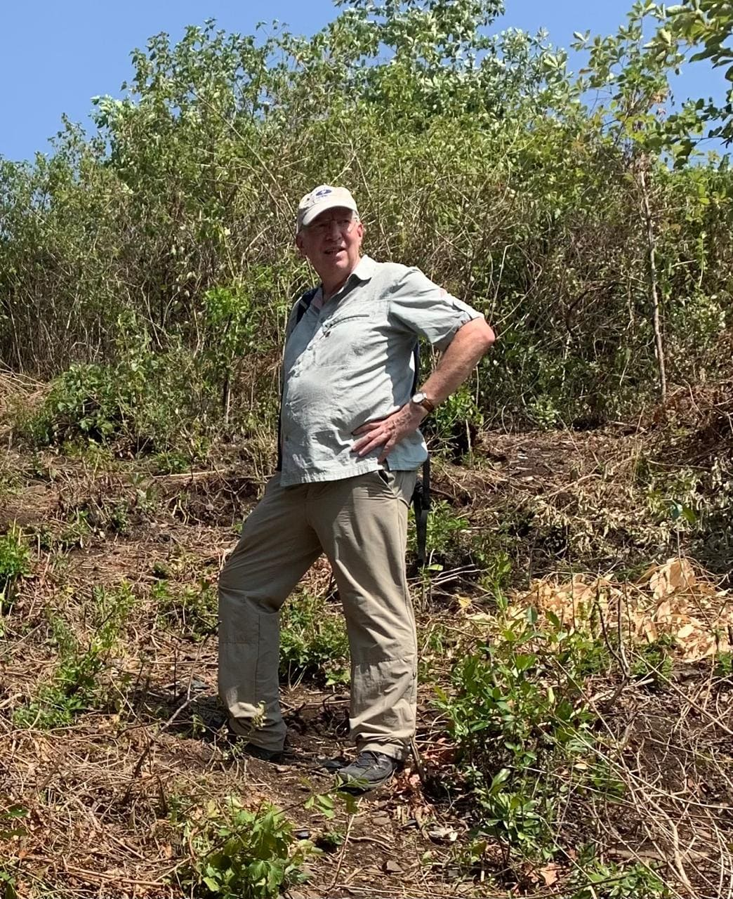

A Kenya-based developer and operating partner for nature-based investment projects in East Africa.
Capital Africa Agribusiness Ventures Ltd is a Kenya-based developer and operating partner for nature-based investment projects. We originate, structure and manage commercially viable forestry, carbon, biodiversity and regenerative land-use projects in East Africa.
Our work begins with land, ecology and partnership. We identify suitable landscapes and landowners, assess technical and commercial feasibility, structure long-term development agreements and build projects that can attract responsible capital. We then remain involved through implementation, monitoring and long-term asset management.
To develop commercially credible natural capital investments that restore landscapes, strengthen local economies and create long-term environmental and financial value.
To become a trusted East African development and operating platform for forestry, carbon, biodiversity and regenerative land-use investments, demonstrating that degraded and underutilised land can be transformed into productive, resilient and investable natural capital assets.
The wider operating platform was established in Kenya to support agribusiness, forestry and nature-based project development.
Capital Africa began developing Koromi Farm as a practical demonstration of commercial forestry, ecological restoration and biodiversity management under dryland conditions.
More than 60,000 trees were established, including substantial Melia volkensii planting and more than 60 tree species. Water, nursery and monitoring systems were progressively developed.
Capital Africa expanded from a single proof-of-concept site toward institutional land partnerships, carbon development, commercial outgrower models and larger natural capital projects.
The company is developing a pipeline of forestry, carbon, biodiversity and agroforestry partnerships in Kenya and the wider East African region.
The people building investable natural capital across East Africa.

Development economist and entrepreneur based in Kenya since 2016.

Hands-on management, production and irrigation specialist.

Technical specialist via the Crescendo Green platform.

Carbon development and certification specialist.